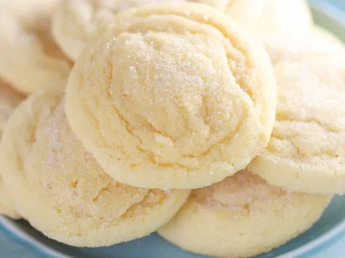

Sugar Cookie Recipe

Sweet, buttery sugar cookies! Here's how to make them...
Ingredients
- 2 3/4 cups All-Purpose Flour
- 1 tsp Baking Soda
- 1/2 tsp Baking Powder
- 1 cup Butter, softened
- 1 1/2 cups White Sugar
- 1 Egg
- 1 tsp Vanilla Extract
Steps
- Preheat the oven to 375 degrees F (190 degrees C).
- Stir together flour, baking soda, and baking powder in a small bowl.
- Cream butter and sugar until smooth in a large bowl. Beat in egg and vanilla. Gradually blend in dry ingredients. Roll rounded teaspoonfuls of dough into balls, and place onto ungreased cookie sheets.
- Bake in the preheated oven until golden, 8 to 10 minutes. Let stand on cookie sheet for 2 minutes before removing to cool on wire racks.